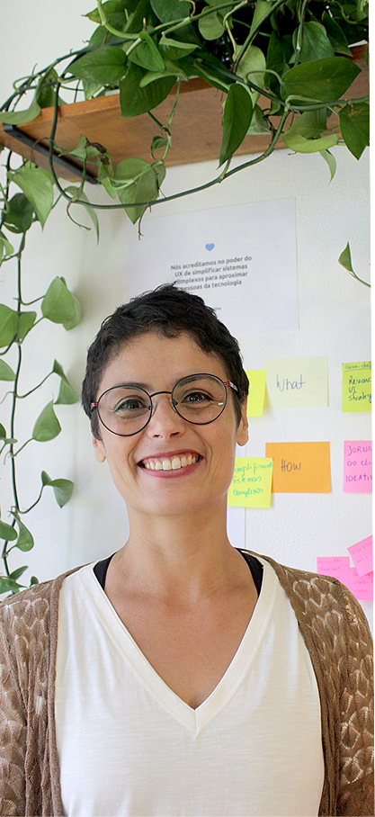
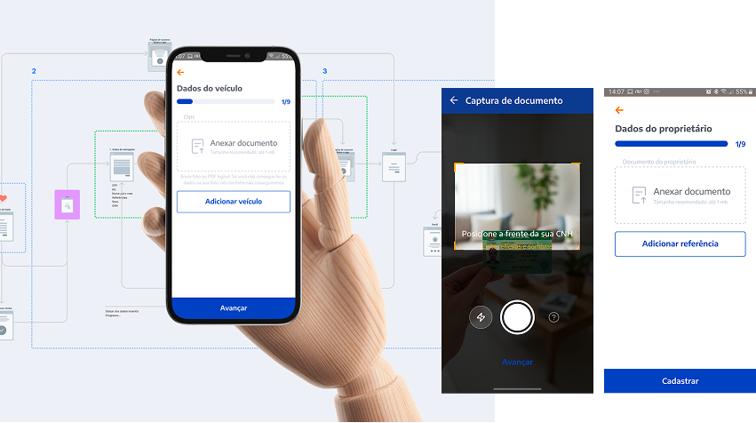

Unicef
O desafio era compreender como agentes de saúde e gestores trabalhavam para criar uma solução que se encaixasse na rotina.
Ver case completo →

Atuo com design estratégico há mais de 20 anos. Tenho atuação em gestão de UX e consultoria para diversos setores de mercado, sou doutoranda em Psicolinguística Experimental (UFSC) e cofundadora da Ideativo Design. Conecto a docência no ensino superior (graduação e pós-graduação) à prática de projeto, facilitação de treinamentos e estratégia para organizações públicas e privadas.
Também tenho experiência em conduzir treinamentos, compartilhar conhecimentos e facilitar a adoção de novas práticas. Ajudo equipes a compreender conceitos, aplicar métodos no dia a dia e ganhar autonomia para tomar decisões melhores.

Atuação em graduação, pós-graduação e MBA (SENAI, UNIVALI) com foco em metodologias criativas e inovadoras. Investigação acadêmica na UFSC voltada à Psicolinguística Experimental, ergonomia cognitiva e interação humano-IA.
Desenho e facilitação de workshops, trilhas de aprendizagem e treinamentos executivos em UX Research, Service Design e automação inteligente de processos para equipes públicas e privadas.
Diagnóstico e arquitetura de soluções sistêmicas para problemas complexos, apoiando lideranças na tomada de decisão, definição de produtos e transformação de serviços. Atuando desde a ideação até o handoff.
O desafio era compreender como agentes de saúde e gestores trabalhavam para criar uma solução que se encaixasse na rotina.
Ver case completo →


Transformação de um sistema hoteleiro nativo em SaaS com contratação self-service.
Ver case completo →